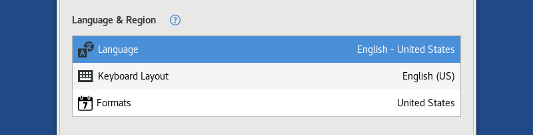
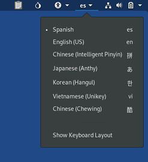
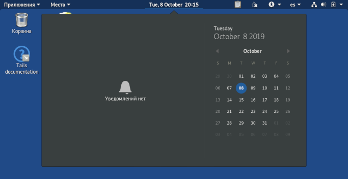
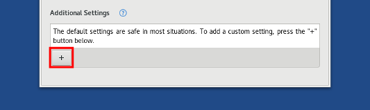

The Welcome Screen appears after the Boot Loader, but before the GNOME Desktop.
You can use the Welcome Screen to specify startup options that alter some of the basic functioning of Tails.

To start Tails without options, click on the Start Tails button.
To store the settings of the Welcome Screen across different Tails sessions, turn on the Welcome Screen feature of the Persistent Storage.
With this feature turned on, unlock your Persistent Storage to restore your settings in the Welcome Screen.
Assistive technologies
You can activate assistive technologies, like a screen reader or large text, from the universal access menu (the icon which looks like a person) in the top bar.
Language & region
You can configure Tails depending on your language and location from the Welcome Screen.

The Language option allows you to change the main language of the interface.
Text that is not translated yet will appear in English. You can help to translate more text.
The Keyboard Layout option allows you to change the layout of the keyboard. For example to switch to an AZERTY keyboard which is common in France.
You will still be able to switch between different keyboard layouts from the desktop after starting Tails.

The Formats option allows you to change the date and time format, first day of the week, measurement units, and default paper size according to the standards in use in a country.
For example, the USA and the United Kingdom, two English-speaking countries, have different standards:
USA United Kingdom Date & time 3/17/2017 3:56 PM 17/03/2017 15:56 First day of the week Sunday Monday Unit system Imperial Metric Paper size Letter A4 With this option you can also display the calendar in a different language than the main language. For example, to display a US calendar, with weeks starting on Sunday, when the main language is Russian.

Persistent Storage
If a Persistent Storage is detected on the USB stick, an additional section appears in the Welcome Screen below the Language & Region section:

To unlock the Persistent Storage, enter your passphrase and click Unlock.
To create a Persistent Storage, see our instructions on creating a Persistent Storage. To learn more about the Persistent Storage, see our documentation on the Persistent Storage.
Additional settings
Tails is configured with care to be as safe as possible by default. But, depending on your situation, you can change one of the following settings from the Welcome Screen.

Administration Password
Set an Administration Password to be able to perform administrative tasks like installing additional software or accessing the internal hard disks of the computer.
See our documentation about the administration password and its security implications.
MAC Address Anonymization
Disable MAC Address Anonymization to prevent connectivity problems with your network interfaces.
See our documentation about MAC address anonymization.
Offline Mode
Turn on the Offline Mode if you want to work completely offline for increased security.
Unsafe Browser
Enable the Unsafe Browser to sign in to a network using a captive portal before starting Tor.
See our documentation about the Unsafe Browser and its security implications.
Keyboard shortcuts
| Alt+L | Language |
| Alt+K | Keyboard Layout |
| Alt+F | Formats |
| Alt+P | Persistent Storage |
| Alt+A | Additional Settings |
| Ctrl+Shift+A | Administration Password |
| Ctrl+Shift+M | MAC Address Anonymization |
| Alt+S | Start Tails |